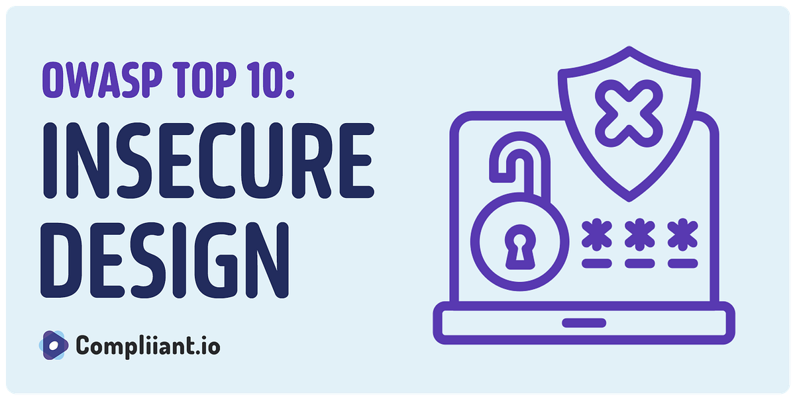

O.W.A.S.P | Top 10 Riesgos en seguridad web
El OWASP Top 10 es un documento de concienciación estándar para desarrolladores y aplicaciones web. Representa un consenso amplio sobre las vulnerabilidades de seguridad más críticas en aplicaciones web.
Esta guía adapta el contenido técnico del OWASP Top 10 a un formato web accesible, con explicaciones claras, ejemplos prácticos y recomendaciones de mitigación para cada riesgo.
Perdida de Control de Acceso (Broken Access Control)
Qué es:
Fallos que permiten a los usuarios actuar fuera de sus permisos (ej. ver o modificar datos de otros, acceder a funcionalidades administrativas como un usuario normal).
Principio de Mitigación:
Implementar un mecanismo de control de acceso robusto, basado en permisos explícitos. "Negar por defecto" y aplicar controles en cada solicitud del servidor.

Fallas Criptográficas (Cryptographic Failures)
Qué es:
Protección inadecuada de datos sensibles (contraseñas, números de tarjetas, datos personales). Incluye uso de algoritmos débiles o obsoletos, transmisión sin cifrado (HTTP), y manejo incorrecto de claves.
Principio de Mitigación:
Cifrar todos los datos sensibles en tránsito y en reposo. Usar algoritmos fuertes y actualizados (ej. AES, TLS 1.2/1.3). Nunca almacenar contraseñas en texto plano; usar funciones de hashing seguras y lentas con salting (ej. Argon2, bcrypt).

Inyección (Injection)
Qué es:
Incluye SQL, NoSQL, LDAP y inyección de comandos del sistema. Ocurre cuando datos no confiables se envían a un intérprete como parte de un comando o consulta.
Principio de Mitigación (La defensa absoluta):
usar consultas parametrizadas o instrucciones preparadas (Prepared Statements) para bases de datos. Escapar caracteres especiales y/o usar frameworks ORM de confianza. Validar y sanitizar toda la entrada del usuario.
Diseño Inseguro (Insecure Design)
Qué es:
Nuevo en 2021, se enfoca en fallas derivadas de decisiones de diseño arquitectónico o lógico, antes de escribir una sola línea de código (ej. lógica de negocio defectuosa, falta de flujos de autorización).
Principio de Mitigación:
Integrar la seguridad desde la fase de diseño (Shift Left Security). Usar modelos de amenazas, patrones de diseño seguros y revisar la arquitectura.
Configuración de Seguridad Incorrecta (Security Misconfiguration)
Qué es:
Configuración predeterminada insegura en servidores, frameworks, bases de datos o aplicaciones (ej. mensajes de error detallados, puertos administrativos abiertos, software desactualizado).
Principio de Mitigación:
Implementar entornos de despliegue estandarizados y "endurecidos". Automatizar los procesos de configuración. Realizar revisiones y auditorías periódicas.
Componentes Vulnerables y Desactualizados
Qué es:
Uso de librerías, frameworks o componentes de software de terceros con vulnerabilidades conocidas (ej. Log4Shell).
Principio de Mitigación:
Inventariar y gestionar continuamente los componentes usados (SBOM - Software Bill of Materials). Suscribirse a alertas de seguridad, utilizar solo componentes oficiales y mantenerlos actualizados.
Fallos de Identificación y Autenticación (Identification and Authentication Failures)
Qué es:
Fallos en los procesos de login, gestión de sesiones y recuperación de contraseñas (ej. credenciales por defecto, autenticación débil, sesiones que no expiran, exposición de IDs de sesión en la URL).
Principio de Mitigación:
Implementar autenticación multi-factor (MFA). No usar credenciales por defecto. Crear contraseñas fuertes y gestionar las sesiones de forma segura (con tokens robustos y renovables).

Fallos en la Integridad del Software y los Datos
Qué es:
Vulnerabilidades relacionadas con la actualización inadecuada de código y datos, sin verificar su integridad (ej. actualizaciones automáticas comprometidas, datos alterados por atacantes).
Principio de Mitigación:
Usar firmas digitales o hashes de verificación para asegurar que el código no ha sido alterado. Utilizar canales seguros y confiables para las actualizaciones.

Fallos de Registro y Monitoreo (Security Logging and Monitoring Failures)
Qué es:
Ausencia o ineficacia en el registro de actividades de seguridad, que impide detectar y responder a incidentes (ej. no registrar intentos de login fallidos).
Principio de Mitigación:
Implementar logging integral que capture eventos de autenticación, control de acceso y validación de entrada. Establecer alertas y mecanismos de respuesta a incidentes. Centralizar y proteger los logs.

Falsificación de Solicitudes del Lado del Servidor (SSRF)
Qué es:
Permite a un atacante inducir a la aplicación a realizar solicitudes HTTP a dominios o sistemas internos no deseados, pudiendo acceder a recursos internos sensibles.
Principio de Mitigación:
Validar y sanitizar estrictamente la entrada del usuario. Implementar listas de permitidos (allow lists) para esquemas, puertos y destinos. No enviar respuestas HTTP crudas al cliente.
Conclusión
El OWASP Top 10 no es una lista de verificación para tachar una vez, sino una brújula estratégica para integrar la seguridad en todo el ciclo de vida del desarrollo de software (SDLC). La seguridad efectiva requiere un enfoque proactivo y en capas (defensa en profundidad), que combine: Cultura: Concientización y capacitación constante. Procesos: Desarrollo Seguro (DevSecOps), revisión de código, pruebas de penetración. Tecnología: Herramientas de análisis estático y dinámico (SAST/DAST), firewalls para aplicaciones web (WAF). Proteger una aplicación web es proteger a sus usuarios, su negocio y su futuro digital. Empiece hoy mismo integrando el OWASP Top 10 en sus prácticas de desarrollo.